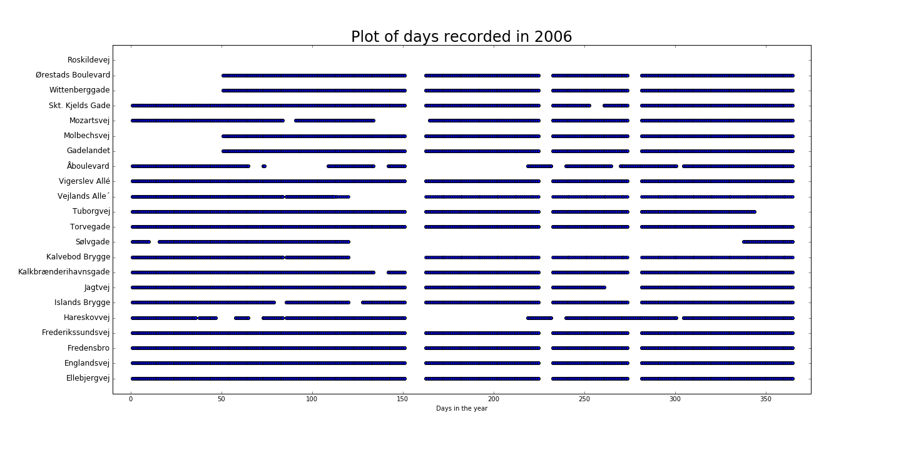

Overview of recording days
Here we see which recording stations are recording throughout the year, for the years 2005 to 2014. What these graphs shows me is that there are often several days where we don't have any recordings. These graphs are also giving me a good overview of where to take data from if i want specific data from a certain year or station.(notebook for making these plots are available here)
